data_path <- paste0(Sys.getenv("HOME"), "/Library/CloudStorage/",
"OneDrive-OxfordUniversityClinicalResearchUnit/",
"GitHub/choisy/typhoid/")Training and testing
Global parameters
The path to the data folder:
Packages
The required packages:
required_packages <- c("dplyr", "purrr", "rsample", "yardstick", "recipes", "themis",
"parsnip", "workflows", "tune", "finetune", "magrittr",
"randomForest")Making sure that the required packages are installed:
to_ins <- required_packages[! required_packages %in% installed.packages()[, "Package"]]
if (length(to_ins)) install.packages(to_ins)
rm(required_packages, to_ins)Loading these packages:
library(dplyr)
library(purrr)
library(rsample)
library(recipes)
library(themis)
library(parsnip)
library(workflows)
library(tune)
library(finetune)
library(yardstick)
library(magrittr)Utilitary functions
file_exists <- function(x) file.exists(paste0(data_path, "cache/", x))
readRDS2 <- function(x) readRDS(paste0(data_path, "cache/", x))
saveRDS2 <- function(object, file) saveRDS(object, paste0(data_path, "cache/", file))logical2factor <- function(x) factor(x, c("FALSE", "TRUE"))show_positive_only <- function(x) x[x > 0]vline <- function(v, ...) abline(v = v, ...)collect_metrics2 <- function(...) {
collect_metrics(...) |>
select(-.config, -.estimator)
}high_density_area <- function(density_curve, threshold) {
density_curve |>
filter(y > threshold) |>
pull(y) |>
sum() |>
divide_by(sum(density_curve$y))
}ci2y <- function(ci, density_curve) {
optimize(function(x) abs(high_density_area(density_curve, x) - ci),
c(0, max(density_curve$y)))$min
}hdi_ci <- function(x, ci) {
density_curve <- density_data_frame(x)
density_curve |>
filter(y > ci2y(ci, density_curve)) |>
pull(x) |>
range()
}density2 <- function(...) density(..., n = 2^10, from = 0, to = 1)density_data_frame <- function(xs) {
xs |>
density2() |>
with(tibble(x, y))
}polygon2 <- function(x, y1, y2, ...) {
polygon(c(x, rev(x)), c(y1, rev(y2)), border = NA, ...)
}legend2 <- function(...) legend(..., bty = "n")Not used yet:
get_nonnull_results <- function(x) {
x[!map_lgl(x, ~ is.null(.x$result))] |>
map(~ .x$result)
}Reading the clean data
The Nepal dataset:
nepal <- paste0(data_path, "clean_data/nepal.rds") |>
readRDS() |>
mutate(across(c(cough, diarrhea, vomiting, abdominal_pain, constipation, headache),
as.logical),
across(c(age, platelets), as.numeric),
across(where(is.logical), logical2factor)) |>
select(-starts_with("score"))The Cambodia and Bangladesh dataset:
cambodia_bangladesh <- paste0(data_path, "clean_data/cambodia_bangladesh.rds") |>
readRDS() |>
mutate(across(where(is.logical), logical2factor)) |>
select(-country)Checking the consistency of the levels of the factors between the two datasets:
levels_nepal <- nepal |>
select(sex, IgM, CRP) |>
map(levels)
levels_cambodia_bangladesh <- cambodia_bangladesh |>
select(sex, IgM, CRP) |>
map(levels)
identical(levels_nepal, levels_cambodia_bangladesh)[1] TRUErm(levels_nepal, levels_cambodia_bangladesh)Comparing the two data sets
nrow(nepal)[1] 603nrow(na.exclude(nepal))[1] 593nrow(cambodia_bangladesh)[1] 565nrow(na.exclude(cambodia_bangladesh))[1] 545nepal |>
map_int(~ sum(is.na(.x))) |>
show_positive_only() age platelets
2 8 cambodia_bangladesh |>
map_int(~ sum(is.na(.x))) |>
show_positive_only() WBC platelets ALT
3 4 17 nepal |>
pull(fever) |>
min()[1] 3cambodia_bangladesh |>
pull(fever) |>
min()[1] 0cambodia_bangladesh2 <- filter(cambodia_bangladesh, fever > 2)
nrow(cambodia_bangladesh2)[1] 399table(nepal$culture)
FALSE TRUE
429 174 table(cambodia_bangladesh2$culture)
FALSE TRUE
366 33 lwd_val <- 4
densities <- map_dfr(list(nepal, cambodia_bangladesh, cambodia_bangladesh2),
~ pull(.x, age) |>
density(from = 0, na.rm = TRUE) |>
with(tibble(x, y)), .id = "dataset")
with(densities, plot(x, y, type = "n", xlab = "age (year)", ylab = "density"))
densities |>
mutate(color = as.numeric(dataset) + 1) |>
group_by(dataset) |>
group_walk(~ with(.x, lines(x, y, col = color, lwd = lwd_val)))
legend("topright", c("Nepal", "Cambodia & Bangladesh", "Cambodia & Bangladesh 2"),
col = 2:4, lwd = lwd_val, bty = "n")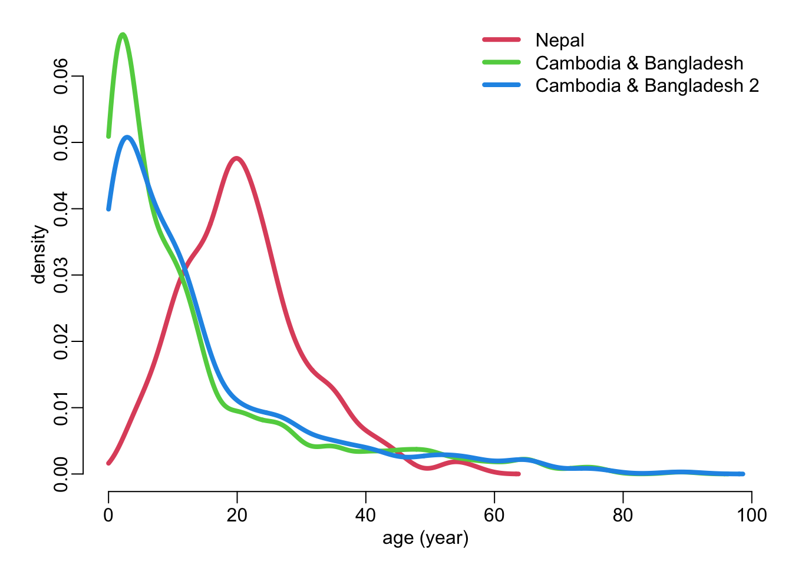
Looking at the colinearity between the binary covariables:
cambodia_bangladesh |>
select(cough, diarrhea, vomiting, abdominal_pain, constipation, headache) |>
na.exclude() |>
mutate(across(everything(), ~ .x == "TRUE")) |>
cor() cough diarrhea vomiting abdominal_pain constipation
cough 1.00000000 -0.02203671 -0.1512236 -0.11480818 -0.06752929
diarrhea -0.02203671 1.00000000 0.1663391 -0.01301662 -0.20412805
vomiting -0.15122358 0.16633905 1.0000000 0.14854384 0.10140087
abdominal_pain -0.11480818 -0.01301662 0.1485438 1.00000000 0.18065360
constipation -0.06752929 -0.20412805 0.1014009 0.18065360 1.00000000
headache -0.16033773 -0.11320234 0.1566424 0.24864539 0.13901709
headache
cough -0.1603377
diarrhea -0.1132023
vomiting 0.1566424
abdominal_pain 0.2486454
constipation 0.1390171
headache 1.0000000A simple non-tuned pipeline
pipeline <- function(data_preprocessing, model, v = 10, repeats = 1,
times = NULL, ...) {
## 1. Data preprocessing ##############################################################
cambodia_bangladesh <- data_preprocessing(cambodia_bangladesh)
nepal <- data_preprocessing(nepal)
splits <- make_splits(list(analysis = seq(nrow(cambodia_bangladesh)),
assessment = nrow(cambodia_bangladesh) + seq(nrow(nepal))),
bind_rows(cambodia_bangladesh, nepal))
training_data <- training(splits)
## 2. Model ###########################################################################
the_recipe <- recipe(culture ~ ., training_data) |>
step_dummy(all_factor_predictors()) |>
step_smotenc(culture)
models <- list(logistic_reg = logistic_reg("classification", "glm"),
randomForest = rand_forest("classification", "randomForest"))
the_workflow <- workflow(the_recipe, models[[model]])
## 3. Evaluation ######################################################################
the_metric <- metric_set(roc_auc)
testing_metric <- the_workflow |>
last_fit(splits, metrics = the_metric) |>
collect_metrics2()
cv_resamples <- the_workflow |>
fit_resamples(vfold_cv(training_data, v, repeats, ...),
metrics = the_metric,
control = control_resamples(save_pred = TRUE))
cv_values <- cv_resamples |>
collect_metrics(summarize = FALSE) |>
pull(.estimate) |>
na.exclude()
fitted_model <- fit(the_workflow, training_data)
list(mean_metric_values = cv_resamples |>
collect_metrics2() |>
left_join(testing_metric, ".metric"),
cv_values = cv_values,
bootstrap_values = splits |>
testing() |>
bootstraps(ifelse(is.null(times), length(cv_values), times)) |>
extract2("splits") |>
map(as_tibble) |>
map_dbl(~ augment(fitted_model, .x) |>
roc_auc(truth = culture, .pred_FALSE) |>
pull(.estimate)))
}add_distribution <- function(density_curve, color = 4, ci_vals = seq(.05, .95, .05)) {
alpha <- 1 / (length(ci_vals) + 1)
polygon2 <- function(...) polygon(..., border = NA, col = adjustcolor(color, alpha))
with(density_curve, {
x2 <- c(0, x, 1)
y2 <- c(0, y, 0)
lines(x2, y2, col = color)
polygon2(x2, y2)
})
ci_vals |>
map_dbl(ci2y, density_curve) |>
map(~ filter(density_curve, y > .x)) |>
rev() |>
walk(~ with(.x, polygon2(c(x[1], x, tail(x, 1)), c(0, y, 0))))
}plot_outline <- function(...) {
plot(NA, xlim = 0:1, xlab = "ROC AUC", ylab = "density", ...)
}Logistic regression
Computing (takes 18”):
out_logistic_reg <- pipeline(
function(x) {
x |>
select(culture, sex, age, cough, diarrhea, vomiting, abdominal_pain,
constipation, headache, pulse, temperature) |>
na.exclude()
},
"logistic_reg",
repeats = 50)add_mean_test <- function(x) {
x |>
extract2("mean_metric_values") |>
pull(.estimate) |>
vline(col = 2, lwd = 3)
}Visualisation of the ROC AUC on the cross-validated training dataset:
density_curve_training <- out_logistic_reg |>
extract2("cv_values") |>
density_data_frame()
plot_outline(ylim = c(0, max(density_curve_training$y)))
add_distribution(density_curve_training)
add_mean_test(out_logistic_reg)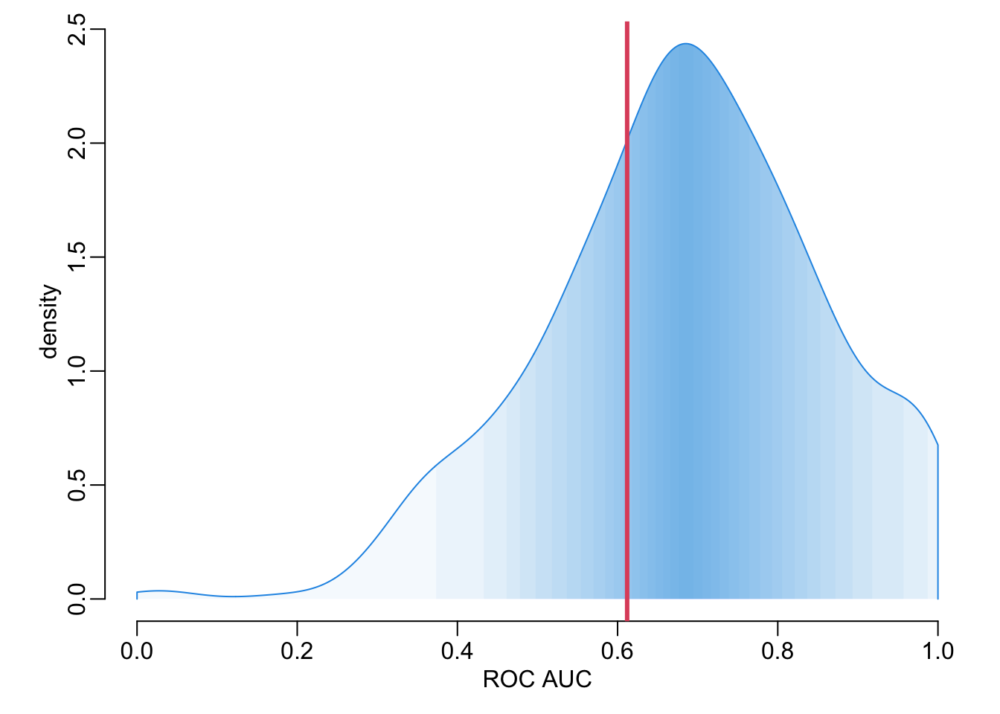
Training different values of k (takes 4’43”):
k_vals <- 2:16
out_logistic_reg_ks <- map2(
k_vals,
round(512 / k_vals),
function(.x, .y) pipeline(
function(x) {
x |>
select(culture, sex, age, cough, diarrhea, vomiting, abdominal_pain,
constipation, headache, pulse, temperature) |>
na.exclude()
},
"logistic_reg",
v = .x,
repeats = .y))k_effect_roc_auc <- function(x, lwdv = 2) {
colors <- rainbow(length(x))
x_df <- map(x, ~ density_data_frame(.x$cv_values))
ymax <- x_df |>
map(extract2, "y") |>
unlist() |>
max()
plot_outline(ylim = c(0, ymax))
walk2(x_df, colors, ~ with(.x, lines(x, y, col = .y, lwd = lwdv)))
legend2("topleft", legend = paste("k =", k_vals), col = colors, lwd = lwdv)
}
k_effect_roc_auc(out_logistic_reg_ks)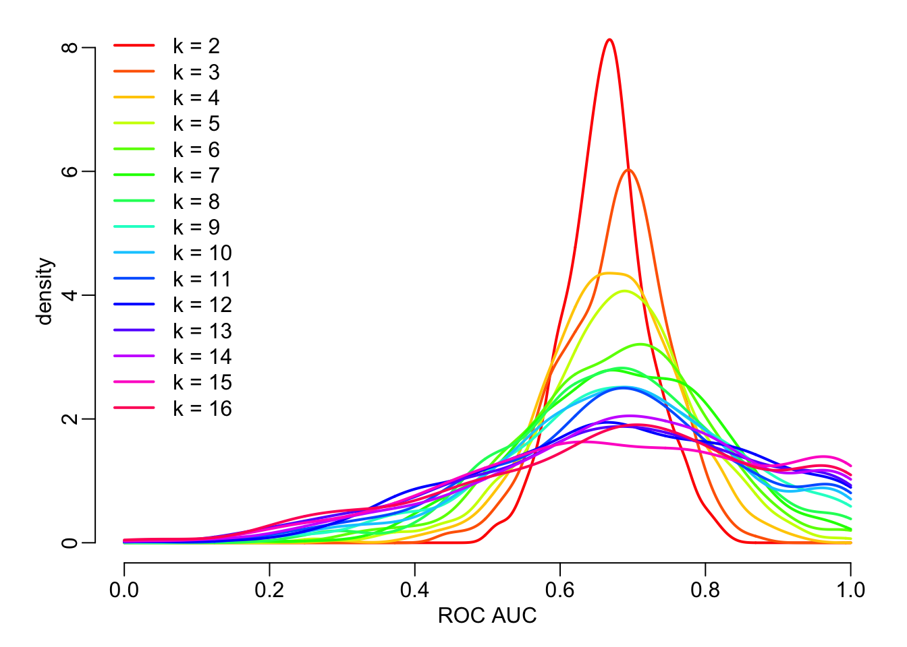
calc_mean_ci <- function(x) {
cv_values_logistic_reg_ks <- map(x, extract2, "cv_values")
list(cv_values_logistic_reg_ks_mean = map_dbl(cv_values_logistic_reg_ks, mean),
cv_values_logistic_reg_ks_ci = cv_values_logistic_reg_ks |>
map(hdi_ci, .95) |>
map(setNames, c("low", "high")) |>
map_dfr(tibble::as_tibble_row))
}lines2 <- function(..., lwd = lwd) lines(..., type = "o", lwd = lwd)k_effect_roc_auc_range <- function(x, lwdv = 2) {
color <- 4
with(calc_mean_ci(x), {
plot(NA, xlim = range(k_vals), ylim = 0:1, xlab = "k", ylab = "ROC AUC")
polygon2(k_vals,
cv_values_logistic_reg_ks_ci$low,
cv_values_logistic_reg_ks_ci$high, col = adjustcolor(color, .2))
walk(c(cv_values_logistic_reg_ks_ci, list(cv_values_logistic_reg_ks_mean)),
~ lines2(k_vals, .x, col = color, lwd = lwdv))
})
}
k_effect_roc_auc_range(out_logistic_reg_ks)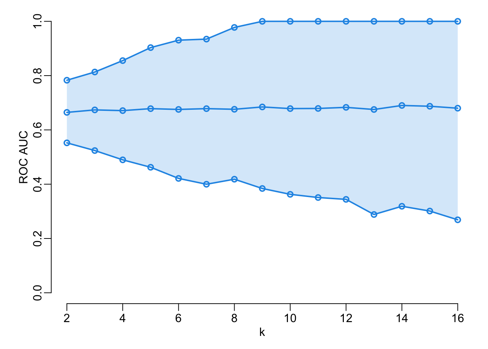
k_effect_roc_auc_mean_range <- function(x, lwdv = 2) {
colors <- c(2, 4)
with(calc_mean_ci(x), {
roc_auc_range <- with(cv_values_logistic_reg_ks_ci, high - low)
plot(rep(k_vals, 2), c(cv_values_logistic_reg_ks_mean, roc_auc_range),
xlab = "k", ylab = "ROC AUC", type = "n")
walk2(list(cv_values_logistic_reg_ks_mean, roc_auc_range), colors,
~ lines2(k_vals, .x, col = .y, lwd = lwdv))
})
legend2("right", legend = c("mean ROC AUC", "ROC AUC 95% CI range"),
col = colors, lwd = lwdv)
}
k_effect_roc_auc_mean_range(out_logistic_reg_ks)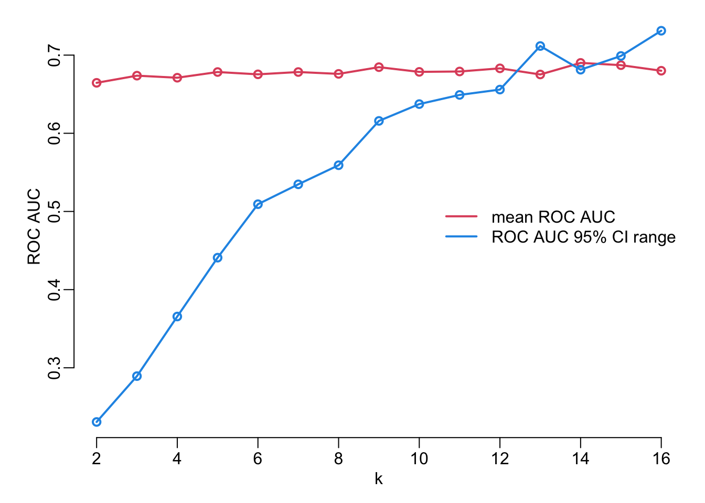
Visualisation of the ROC AUC on the cross-validated training dataset and the bootstrapped testing dataset:
plot_training_and_testing <- function(x, ...) {
density_curve_training <- x |>
extract2("cv_values") |>
density_data_frame()
density_curve_testing <- x |>
extract2("bootstrap_values") |>
density_data_frame()
plot_outline(ylim = c(0, max(max(density_curve_training$y),
max(density_curve_testing$y))), ...)
add_distribution(density_curve_training) ###
add_distribution(density_curve_testing, 2)
add_mean_test(x)
}plot_training_and_testing(out_logistic_reg)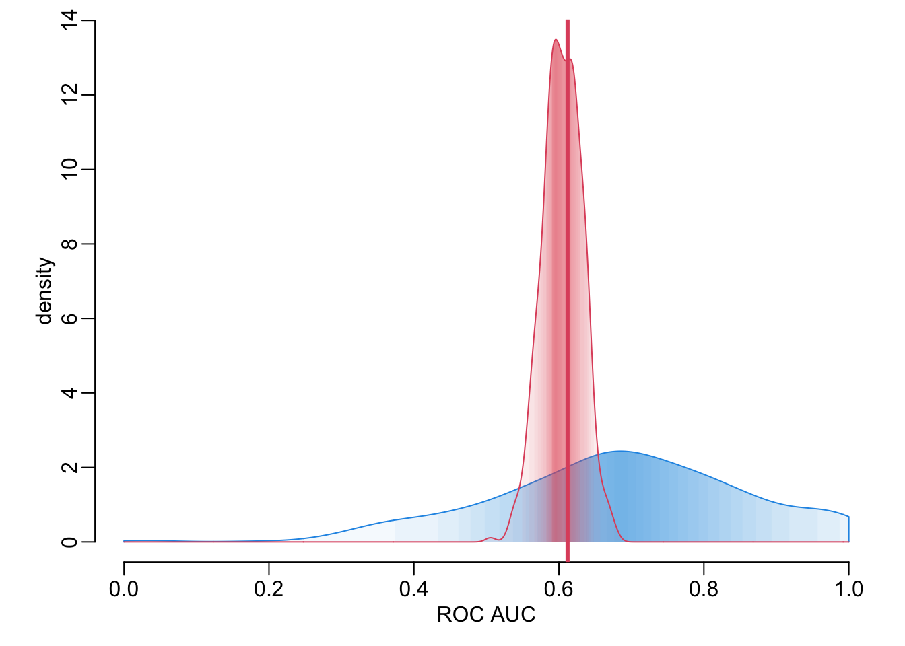
With \(k = 2\):
plot_training_and_testing(out_logistic_reg_ks[[1]])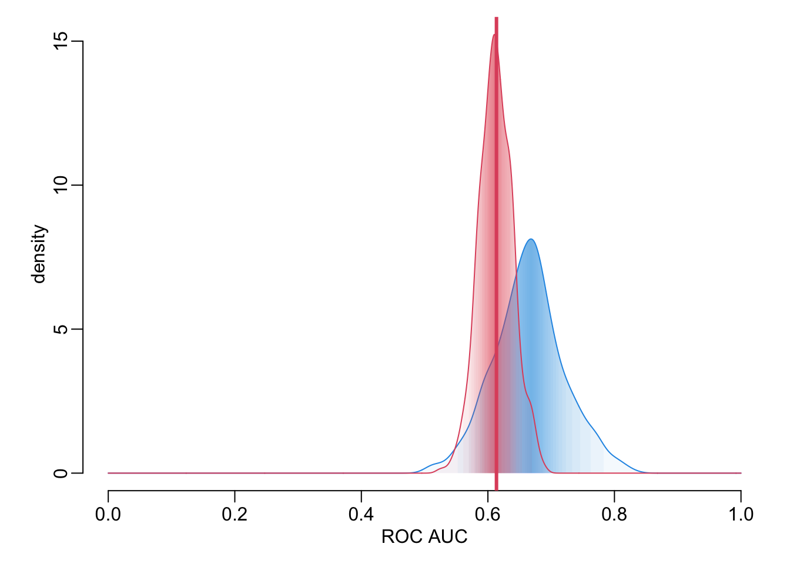
Random forest
Let’s look at random forest (takes 40’):
out_random_forest_ks <- map2(
k_vals,
round(512 / k_vals),
function(.x, .y) pipeline(
function(x) {
x |>
select(culture, sex, age, cough, diarrhea, vomiting, abdominal_pain,
constipation, headache, pulse, temperature) |>
na.exclude()
},
"randomForest",
v = .x,
repeats = .y))walk(list(k_effect_roc_auc, k_effect_roc_auc_range, k_effect_roc_auc_mean_range),
~ .x(out_random_forest_ks))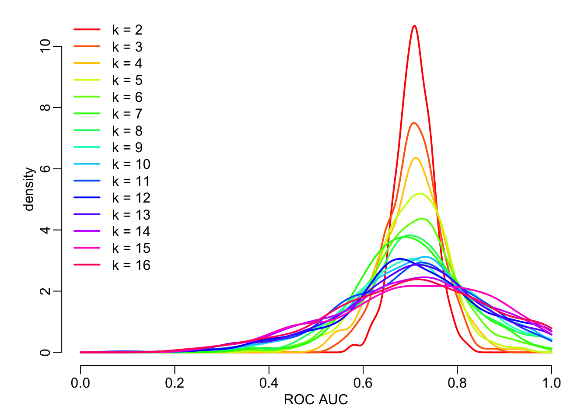
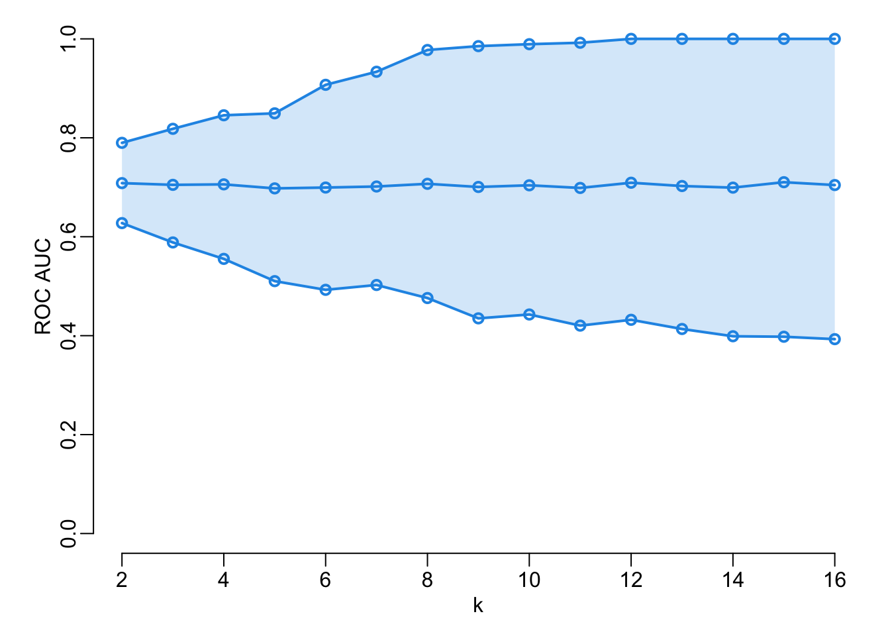
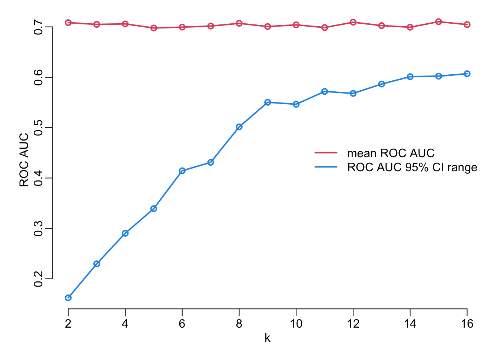
opar <- par(mfrow = 1:2, plt = c(.15, .97, .13, .85))
plot_training_and_testing(out_logistic_reg_ks[[1]], main = "logistic regression")
plot_training_and_testing(out_random_forest_ks[[1]], main = "random forest")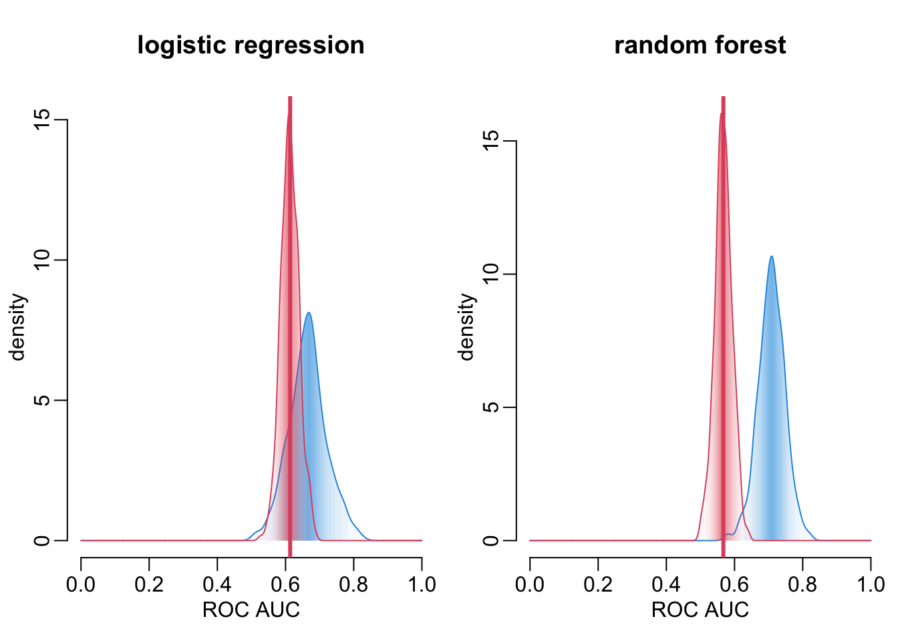
par(opar)Next:
- ROC curves
- Feature importance
- Interpretation (in particular with continuous variables)
- Clinical score
The ROC curve:
default_workflow |>
last_fit(splits, metrics = the_metric) |>
collect_predictions() |>
roc_curve(culture, .pred_yes) |>
with(plot(1 - specificity, sensitivity, type = "l"))
plot(NA, xlim = 0:1, ylim = 0:1)
aaa <- cv_data |>
collect_predictions() |>
group_by(id, id2) |>
group_split() |>
map(safely(roc_curve), culture, .pred_yes) |>
get_nonnull_results() |>
walk(~ with(.x, lines(1 - specificity, sensitivity)))